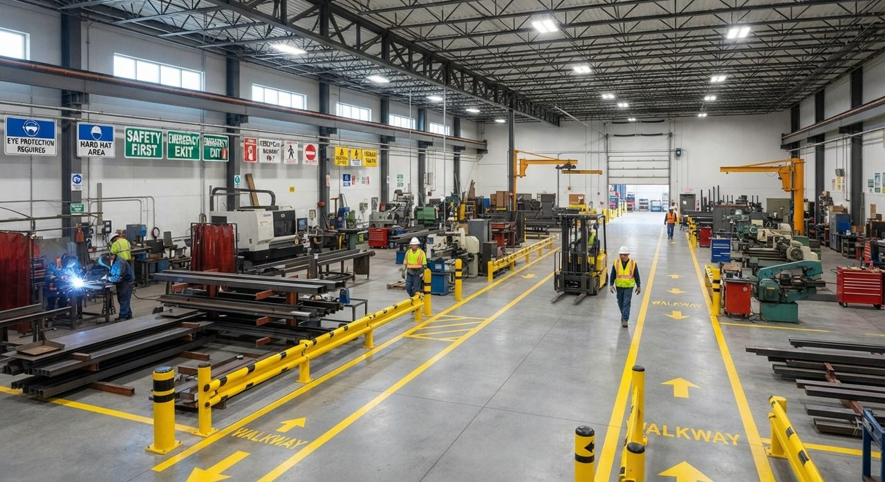
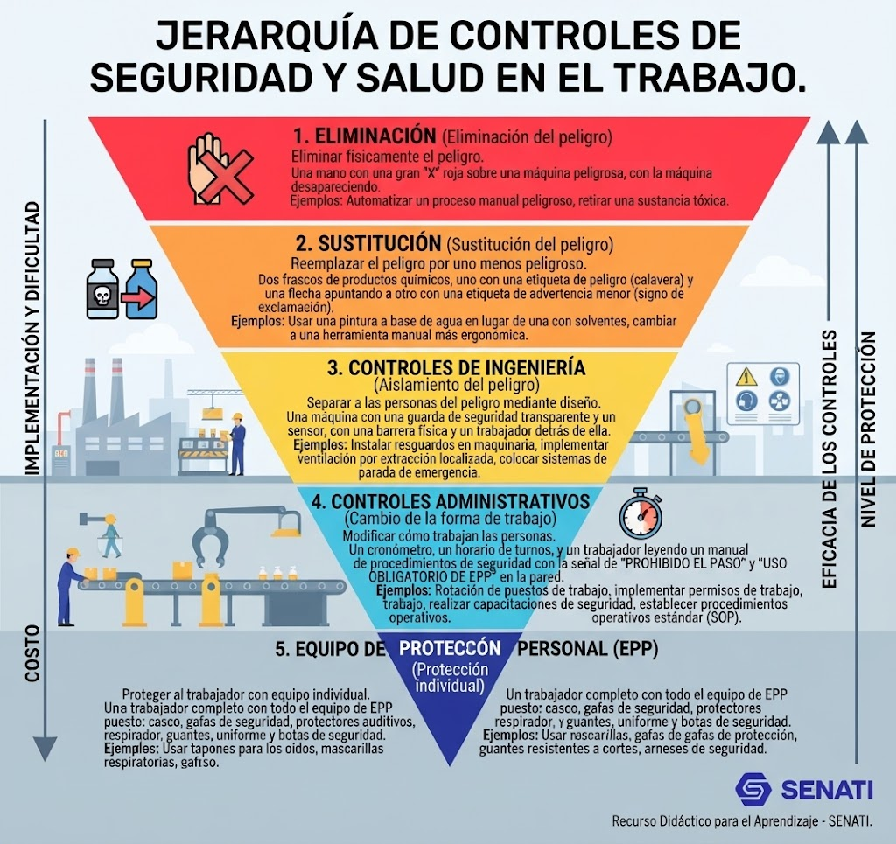
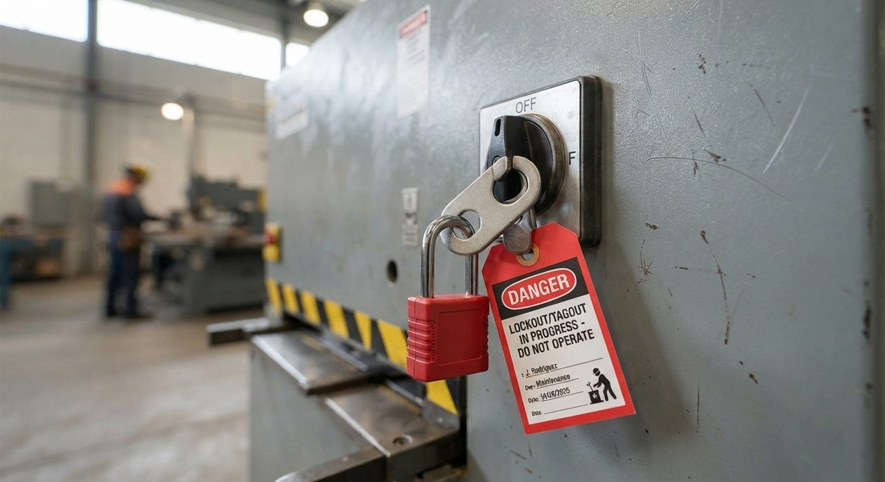
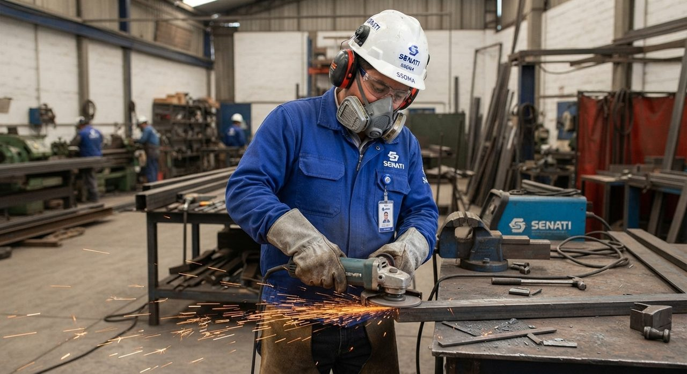
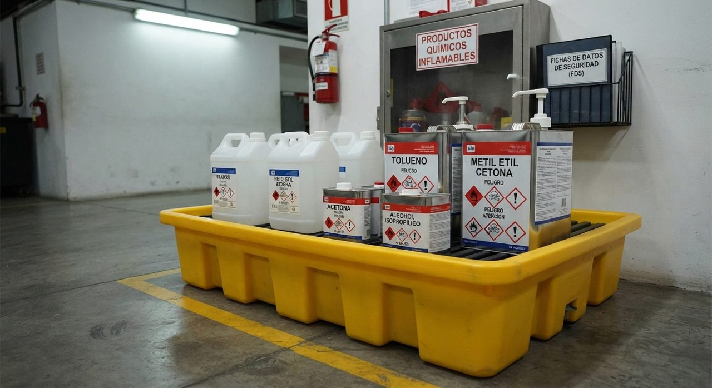
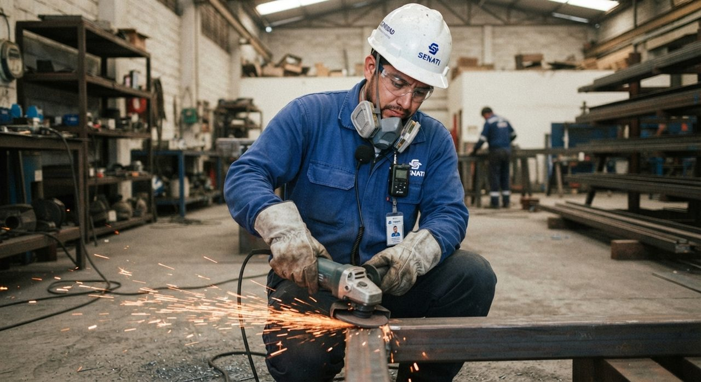
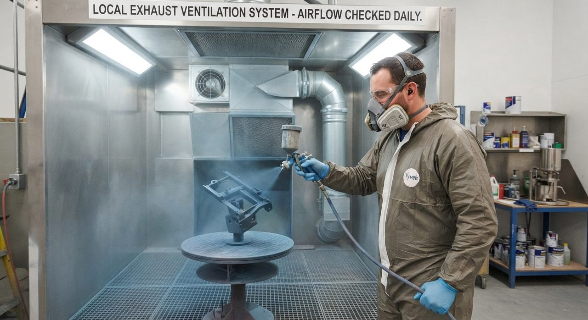
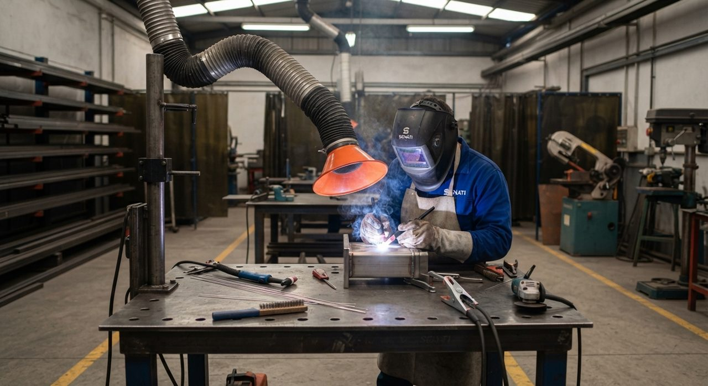
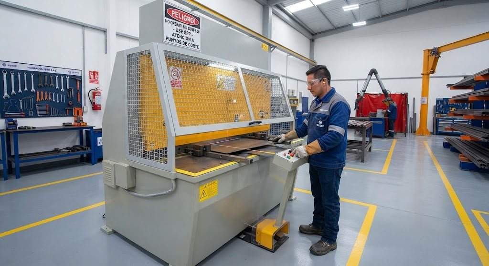
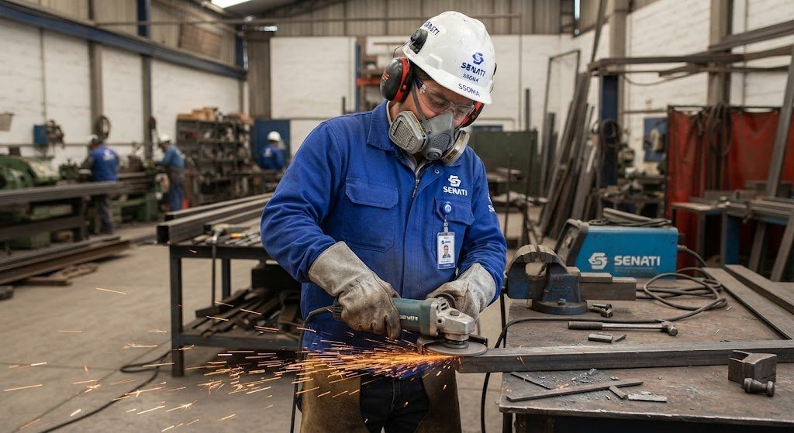

Corte
Plasma y cizalla hidráulica.
Peligro: atrapamiento y ruidoINDUANDES PERÚ S.A.C. fabrica estructuras metálicas, guardas de maquinaria y componentes para mantenimiento industrial, cuidando la seguridad y la salud de su gente en cada proceso.
Conoce nuestros procesosGestión de seguridadCotiza o agenda una cita
INDUANDES PERÚ S.A.C. (IAP) es una empresa metalmecánica mediana ubicada en Ventanilla, Callao. Opera desde 2012 en dos turnos, de 06:30 a 15:15 y de 15:15 a 23:30, y fabrica piezas para el mantenimiento industrial.

Cada proceso tiene un peligro principal identificado y un responsable de controlarlo.
Plasma y cizalla hidráulica.
Peligro: atrapamiento y ruidoRolado de planchas y prensas plegadoras.
Peligro: partes móvilesProcesos SMAW y MIG.
Peligro: humos metálicos y quemadurasEsmeriles de banco y angulares.
Peligro: ruido y proyección de chispasLimpieza superficial de piezas.
Peligro: proyección de partículasCabina semiautomatizada con extracción local.
Peligro: vapores orgánicosEn INDUANDES la seguridad es parte del proceso productivo. Entre noviembre de 2025 y abril de 2026 registramos cinco eventos que mostraron dónde faltaban controles. Este es el plan con el que los estamos corrigiendo.
La Ley N° 29783 y su Reglamento reparten responsabilidades entre ambas partes. Con 148 trabajadores, IAP debe contar con un Comité de Seguridad y Salud en el Trabajo.
| Empleador (IAP) | Trabajador |
|---|---|
| Identificar peligros y evaluar riesgos con el IPERC | Cumplir los procedimientos y el ATS |
| Entregar el EPP y verificar su uso | Usar correctamente el EPP |
| Capacitar al personal | Reportar peligros, incidentes y accidentes |
| Investigar los accidentes y llevar registros | Participar en capacitaciones y exámenes médicos |
| Mantener las guardas y las condiciones del taller | No operar equipos sin autorización ni retirar guardas |
Peligro es la fuente que puede causar daño; riesgo es la probabilidad de que ocurra combinada con su severidad; daño es la lesión o enfermedad resultante.
Ruido en esmerilado y corte; chispas y calor.
Vapores de thinner y pintura; humos de soldadura.
Partes móviles de cizalla y prensas; proyección de partículas.
Equipos MIG y SMAW, esmeriles y compresor con cables y conexiones.
Manipulación manual de planchas y perfiles.
Valoración: nivel de riesgo = probabilidad (1–5) × severidad (1–5). Rangos: 1–4 tolerable, 5–9 moderado, 10–16 importante, 17–25 crítico. Se interviene primero lo crítico y luego lo importante.
| Tarea | Peligro | Riesgo | P | S | Nivel | Controles propuestos (por jerarquía) |
|---|---|---|---|---|---|---|
| Retiro de recortes en cizalla | Partes móviles, energía residual | Atrapamiento, amputación | 4 | 5 | 20 Crítico | Guarda fija con enclavamiento, herramienta de retiro, bloqueo (LOTO), ATS |
| Esmerilado y corte | Ruido, proyección de partículas y chispas | Hipoacusia, lesión ocular, quemadura | 4 | 4 | 16 Importante | Pantallas, medición de ruido, rotación, orejeras, careta y lentes |
| Limpieza con thinner | Vapores orgánicos | Irritación, cefalea, intoxicación | 4 | 4 | 16 Importante | Sustitución por desengrasante acuoso, extracción local, respirador con cartucho OV |
| Pintura en cabina | Vapores y neblina de pintura | Afección respiratoria | 3 | 4 | 12 Importante | Mantenimiento de la extracción, muestreo trimestral, respirador y fit check |
| Plegado en prensas | Zona de prensado, partes móviles | Aplastamiento de manos | 3 | 5 | 15 Importante | Barrera o cortina de luz, pedal protegido, bimanual y ATS |
| Rolado de planchas | Rodillos en movimiento | Atrapamiento de manos y ropa | 3 | 4 | 12 Importante | Guarda sobre rodillos, parada de emergencia, ropa ajustada y ATS |
| Soldadura SMAW y MIG | Humos metálicos, radiación y chispas | Irritación respiratoria, quemaduras | 3 | 4 | 12 Importante | Extracción localizada, cortinas, careta, respirador con filtro y guantes |
| Granallado | Proyección de partículas y polvo | Lesión ocular y afección respiratoria | 3 | 4 | 12 Importante | Cabina cerrada, careta o capucha, respirador y protección auditiva |

| Paso | Peligro | Control (jerarquía) | Responsable |
|---|---|---|---|
| Parar y aislar | Energía residual | Parada, bloqueo y etiquetado (administrativo) | Supervisor |
| Retirar con herramienta | Partes móviles | Guarda enclavada y pinza (ingeniería) | Operario |
| Orden y limpieza | Bordes cortantes | Guante anticorte (EPP) | Operario |

| Paso | Peligro | Control (jerarquía) | Responsable |
|---|---|---|---|
| Desconectar el esmeril | Arranque accidental | Desenchufar y bloquear (administrativo) | Operario |
| Retirar el disco usado | Cortes, disco caliente | Llave adecuada y espera de enfriamiento (administrativo) | Operario |
| Montar disco y guarda | Rotura y proyección | Disco con rpm compatibles y guarda instalada (ingeniería) | Operario |
| Prueba en vacío | Proyección, ruido | Careta, lentes y orejeras (EPP) | Supervisor |

| Paso | Peligro | Control (jerarquía) | Responsable |
|---|---|---|---|
| Revisar la SDS y el área | Vapores, inflamabilidad | Desengrasante acuoso cuando sea viable (sustitución) | SSOMA |
| Limpiar la pieza | Inhalación y contacto | Extracción local y ventilación (ingeniería) | Operario |
| Guardar el solvente | Derrame, incendio | Envase rotulado y zona de almacenamiento (administrativo) | Almacén |
| Durante todo el trabajo | Exposición residual | Respirador OV, guante de nitrilo y gafas herméticas (EPP) | Operario |

| Agente | Dónde medir | Método | Frecuencia | Acción si excede el límite |
|---|---|---|---|---|
| Ruido | Esmerilado y corte | Dosimetría por puesto | Semestral | Aislar la fuente, rotar, reforzar protección auditiva |
| Vapores orgánicos | Pintura y limpieza | Muestreo personal | Trimestral | Mejorar ventilación y sustituir producto |
| Humos metálicos | Soldadura | Muestreo personal | Semestral | Extracción localizada y respirador con filtro adecuado |



Las mediciones deben hacerlas laboratorios o profesionales acreditados, a diferencia del monitoreo interno del 22/02/2026. Los resultados se comparan con los VLP vigentes (D.S. N° 015-2005-SA y R.M. N° 733-2024-MINSA) y con la guía MINSA/DIGESA para ruido.


| Protección | EPP correcto | Verificación | Reposición |
|---|---|---|---|
| Auditiva | Orejeras o tapones con atenuación según dosimetría | Inspección visual y prueba de ajuste | Por desgaste o deterioro |
| Respiratoria | Media cara con cartucho para vapores orgánicos (OV) | Fit check positivo y negativo | Por saturación u olor percibido, con registro |
| Ocular | Gafas herméticas antisalpicaduras; careta en esmerilado | Lentes sin rayaduras y buen sellado | Por daño |
| Manos | Nitrilo para solventes; anticorte para planchas | Revisión de cortes y permeación | Por desgaste o contaminación |
Retirar recortes y piezas que no se usan.
Herramientas en tablero y perfiles en racks.
Piso libre de virutas y derrames.
Colores, rutas y demarcación iguales en toda la planta.
Revisión 5S en cada turno.
Colores de señalización (NTP 399.010-1): rojo para prohibición y equipos contra incendio, amarillo para advertencia, azul para obligación (uso de EPP) y verde para condiciones seguras y salidas de emergencia. Un acto inseguro es, por ejemplo, retirar recortes con la máquina en marcha; una condición subestándar es una guarda inadecuada.
| Equipo | Qué verificar | Frecuencia (propuesta) |
|---|---|---|
| Cizalla hidráulica | Guarda fija, parada de emergencia, enclavamiento y bloqueo | Cada turno |
| Prensas plegadoras | Barrera de protección y pedal protegido | Cada turno |
| Esmeriles de banco y angulares | Guarda del disco, disco sin fisuras, rpm compatibles, cable sano | Cada turno |
| Equipos MIG y SMAW | Cables sin daños, conexión a tierra, pinzas aisladas | Cada turno |
| Compresor | Válvula de seguridad, manómetro y protección de partes móviles | Semanal |
La zona de solventes y la cabina de pintura concentran el mayor riesgo, porque junto a las chispas hay líquidos inflamables.
Thinner, pinturas, trapos.
Oxígeno del aire.
Chispas y soldadura.
Se corta al apagar el fuego.
| Clase | Combustible | Ejemplo en IAP | Extintor |
|---|---|---|---|
| A | Sólidos | Cartón, madera, trapos | PQS ABC |
| B | Líquidos inflamables | Thinner y pinturas | PQS ABC o CO₂ |
| C | Equipos energizados | Tableros, equipos de soldar | CO₂ o PQS |
Accidente del 07/01/2026: retiro de recortes en la cizalla sin procedimiento y sin guardas adecuadas. Un incidente es un evento sin lesión (como el corte leve del 11/11/2025 si no hubiera lesión); un accidente causa lesión. Reportar a tiempo permite investigar mientras la evidencia sigue intacta.
| Causa | Acción correctiva o preventiva | Responsable | Plazo |
|---|---|---|---|
| Sin ATS ni procedimiento | ATS de cizalla firmado y capacitación | SSOMA y Supervisión | 15 días |
| Guardas inadecuadas | Guarda fija con enclavamiento | Mantenimiento | 30 días |
| Retiro con la mano | Herramienta de retiro y bloqueo | Producción | 15 días |
| Supervisión tolera atajos | Observaciones de conducta e inspecciones | Jefaturas | Continuo |
| Agente | Posible daño | Medida de prevención | EPP |
|---|---|---|---|
| Ruido | Hipoacusia | Dosimetría, rotación y audiometrías | Orejeras o tapones |
| Vapores de solventes | Irritación, cefalea, dermatitis | Sustitución y extracción local | Respirador OV, nitrilo y gafas |
| Humos de soldadura | Irritación respiratoria, fiebre de humos metálicos | Extracción localizada y muestreo | Respirador con filtro adecuado |
| Carga manual | Lesiones musculoesqueléticas | Ayudas mecánicas y pausas | Guantes y calzado de seguridad |
Seguimiento de la carpeta que presentaremos ante SUNAFIL. Marca cada bloque cuando tenga su evidencia y la barra mostrará el avance.
0 de 5 bloques listos
| Indicador | Fórmula | Línea base | Meta a 90 días | Responsable | Frecuencia |
|---|---|---|---|---|---|
| ATS aplicados a tareas críticas | ATS firmados ÷ tareas críticas ejecutadas × 100 | 0% | 100% | Supervisión | Cada turno; reporte mensual |
| Usuarios de respirador con fit check | Usuarios con prueba ÷ usuarios × 100 | 0% | 100% | SSOMA | Mensual |
| Agentes con monitoreo acreditado | Agentes con informe ÷ 3 (ruido, vapores, humos) × 100 | 0 de 3 | 3 de 3 | SSOMA | Trimestral |
| Bloques de la carpeta SUNAFIL completos | Bloques con evidencia ÷ 5 × 100 | 0 de 5 | 5 de 5 | SSOMA | Quincenal |
| Acciones correctivas cerradas a tiempo | Acciones cerradas en plazo ÷ programadas × 100 | Por levantar | 90% | Jefaturas | Mensual |
| Capacitación completada | Trabajadores capacitados ÷ programados × 100 | Por levantar | 95% | RR.HH. | Mensual |
| Accidentes con lesión por atrapamiento | Número de casos en el periodo | 1 (07/01/2026) | 0 | SSOMA | Mensual |
Las líneas base “por levantar” se miden en la primera semana del plan, antes de comparar resultados.
IPERC → ATS → Controles por jerarquía → Monitoreo e higiene → Evidencias → Verificación → Mejora continua
Elige un servicio, agenda una cita o escríbenos. Confirmaremos los detalles contigo.
Fabricación con corte, rolado, soldadura y pintura.
Protecciones para equipos y máquinas industriales.
Piezas y componentes para el mantenimiento industrial.
| Unidad | Semanas | Dónde verlo en esta página |
|---|---|---|
| 1. Marco legal y conceptos básicos de SST | 1–3 | Marco legal |
| 2. Identificación de peligros y evaluación de riesgos | 4–6 | Peligros, IPERC, Controles |
| 3. Análisis de Trabajo Seguro (ATS) | 7–8 | ATS |
| 4. Equipo de Protección Personal | 9–13 | EPP, 5S, Guardas, SDS, Incendios |
| 5. Investigación de incidentes y seguridad basada en el comportamiento | 14–16 | Frank Bird, Enfermedades, Plan 90 días |
Trabajo final del curso CGEU-271 Seguridad e Higiene Industrial · Escuela de Administración de Empresas · SENATI. Estudiante: [escribe tu nombre aquí].